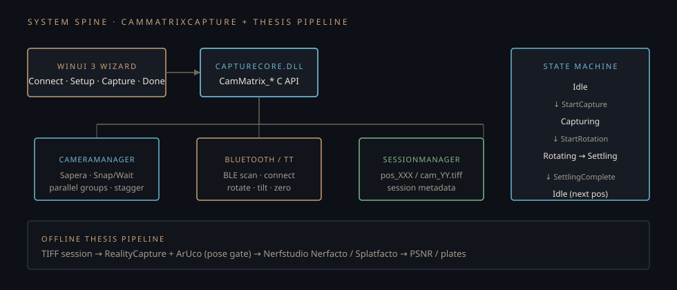

Monograph · 01 · Architecture
Foundations · implementation
Architecture
Owns system spine, module boundaries, threading model, and what “one capture system” means. Must not own Sapera Snap details (ch.02) or RC evaluation (ch.09). Done when a reader can sketch WinUI → CaptureCore → Camera / BLE / Session without opening the repo.
Role in the system
CamMatrixCapture is the acquisition product for multi-view neural rendering datasets. It does not train NeRFs. It owns: discover industrial cameras, drive a BLE turntable, capture synchronized multi-view stacks, and write a session tree that offline tools (RealityCapture, Nerfstudio) can consume.
Call graph at the top: WinUI pages call CaptureService (C# P/Invoke) → CamMatrix_* exports in CaptureAPI
→ CameraManager / BluetoothManager / SessionManager / CaptureStateMachine.
System spine

Spine. Didactic diagram of live code modules. Offline thesis pipeline is a consumer of TIFF sessions, not inside the DLL.
Module boundaries
| Module | Owns | Must not own |
|---|---|---|
| API / SM | C exports, capture-rotation state machine, timing counters | UI layout |
| Hardware | Sapera devices, Snap/Wait, color config, parallel groups | BLE protocol |
| Bluetooth | Scan, connect, turntable commands | Image buffers |
| Capture controller | Worker thread sequence over positions | SfM |
| Session | Paths, session ids, capture path allocation | Camera SDK |
| GUI | Wizard UX, polling, settings dialogs | Direct Sapera calls |
| Thesis offline | RC / Nerfstudio / metrics | Live capture thread |
Threading model
- UI thread — WinUI dispatcher; never blocks on Snap
- Capture worker —
AutomatedCaptureControllerstd::thread walks positions - Camera ops — sync Snap/Wait in C++; async wrappers via Task.Run / CaptureAllCamerasAsync
- BLE — WinRT async / co_await style device IO
- Status — UI polls
CamMatrix_GetCaptureStateevery ~200–500 ms
- Launch WinUI host → load
settings.iniviaCamMatrix_LoadSettings - Connect page: discover GigE + BLE scan
- Setup page: choose 36/72/custom positions
- Capture page:
CamMatrix_StartCapture→ worker thread - Done page: open session path under
neural_dataset/
Capture and rotation must not interleave without the state machine. Invalid events are rejected (logged REJECTED: Event …) rather than silently applied — see ch.04.
Design decisions that landed
C++ hardware core + C# wizard
Why
Sapera and BLE want native code; operators need a simple wizard. P/Invoke keeps a hard boundary: UI cannot hold SapBuffer pointers.
Code: src/api/CaptureAPI.*, App/Services/CaptureService.cs
Session folder as the integration contract
Why
Offline tools do not speak CaptureCore. neural_dataset/session/pos_XXX/cam_YY.tiff is the stable handoff.
Source map
src/api/CaptureAPI.*C exports CamMatrix_*src/api/CaptureStateMachine.*Idle/Capturing/Rotating/Settling/Errorsrc/hardware/CameraManager.*Sapera discovery + capture groupssrc/bluetooth/*BLE + turntable controllersrc/capture/AutomatedCaptureController.*Worker sequencesrc/utils/SessionManager.*Paths + session metadataApp/Pages/*Page.xamlWizard UIHow to go deeper
- Read
CaptureStateMachine::IsValidTransitiontable end-to-end - Trace
CameraManager::CaptureAllCamerasSnap vs save phases - Run a 36-step dry session and inspect folder layout